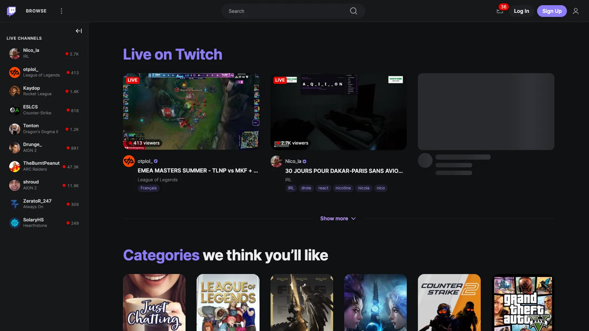
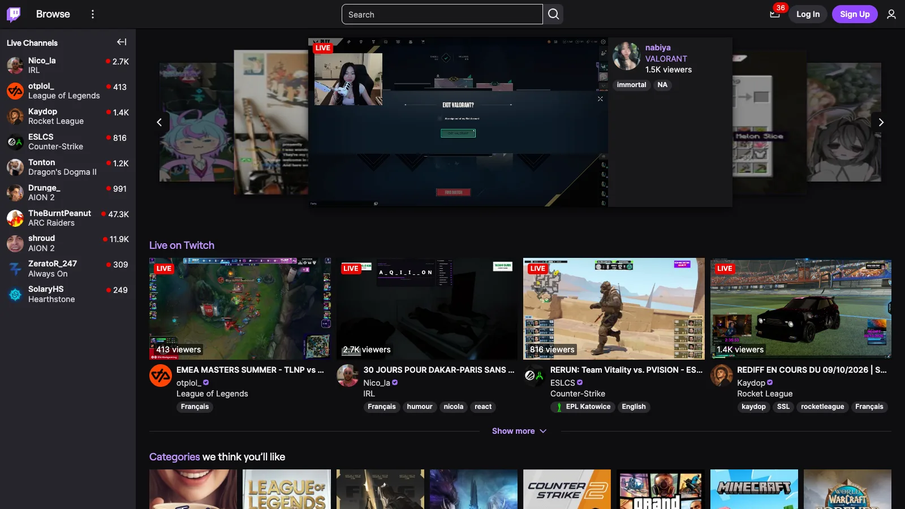

A quieter sidebar and top bar
- Smaller rows, small-caps section headers, viewer counts aligned to the right.
- No stories, no hover cards, no "For You" header.
- More room in the top bar, a pill-shaped search field, dimmed icons.
Restyle for Twitch is a free Chrome extension that quiets the busy parts of twitch.tv and gives the content more room. Nothing is added, and nothing works differently.


It is a stylesheet laid over twitch.tv. Turn it off in one click and Twitch is back as it was.
Click the extension's icon. Changes apply at once, without reloading the page.
| Enable on Twitch | Turns the whole restyle on or off. |
|---|---|
| Spacing | Three densities: compact, airy, very airy. |
| Accent colour | The colour of links, tags and highlights. |
| Plain chat | Hides chat badges and shows every username in the text colour. |
| Background colour | The page colour. Sidebars, chat, menus and text colours are derived from it. Reset it to follow Twitch's own light or dark theme. |
It is not on the Chrome Web Store yet. Until then, load it from the source. Requires Chrome 120 or later.
Download or clone the repository.
git clone https://github.com/corentin-gautier/restyle-for-twitch.gitOpen chrome://extensions and turn on Developer mode.
Click Load unpacked and select the repository folder.
Twitch changes its markup without notice, so an update on their side can break part of the restyle. If something looks wrong, open an issue with a screenshot and the page's address.
The extension only runs on twitch.tv. It collects nothing and sends nothing anywhere. Its one permission, storage, is used to remember your settings.